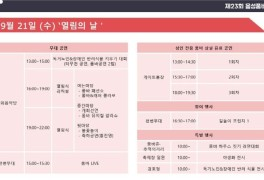
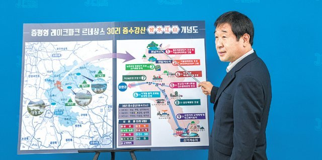

충청북도 음성군
예측 / 이상치 그래프
토픽 모델링 - 한달전
토픽 모델링 - 현재
인구기초통계
방문자 거주지
지역 소비액
관광 관련 뉴스 모음

조병옥 음성군수는 "문화관광축제이자 충북도 최우수 축제인 음성품바축제가 세계적인 축제로 발전하도록 많은 분이 축제장을 찾아 함께 즐겨주시길 바란다"고 말했다. 한편 축제장을 찾은 사람들의 편의를 위해...
충북 음성군(군수 조병옥)의 명품 농산물을 한자리에서 만날 수 있는 ‘음성명작페스티벌’이 10월5일부터... “볼거리ㆍ먹거리ㆍ즐길거리가 풍성한 만큼 많은 관광객들이 축제를 찾았으면 좋겠다”고 말했다.
글로벌 품바 래퍼 경연대회 시상식 모습.(제공=음성군청) 충북 음성군 음성읍 설성공원 일원에서 열리고... 무대의 DJ 주도 아래 1천여 명의 퍼레이드 참가팀과 관광객이 7080 EDM 음악에 맞춰 춤추며 즐기는 광경은 그야말로...

음성군은 ‘레이크파크 르네상스 사업’을 대응할 전담팀(TF)을 꾸리기로 했다. 음성에는 삼형제·맹동·원남저수지 등 45개 저수지가 있는데, 과도한 규제로
공직자들은 축제 기간 부서별로 제작한 품바 옷을 입고 내근과 현장근무를 병행하면서 2022년 문화관광축제이자 충북도 최우수 축제인 음성품바축제 관광객들을 반갑게 맞이할 계획이다. 3년 만에 대면행사로...

한, 꽃동네 설립 정신을 기리기 위해 2000년부터 시작된 음성품바 축제는 충북도 유일 문화관광축제로, 2016년부터 7년 연속 충청북도 최우수 축제로 선정되기도 했다. 지난해 온라인으로 열린 품바 축제는 누적 조회 수...